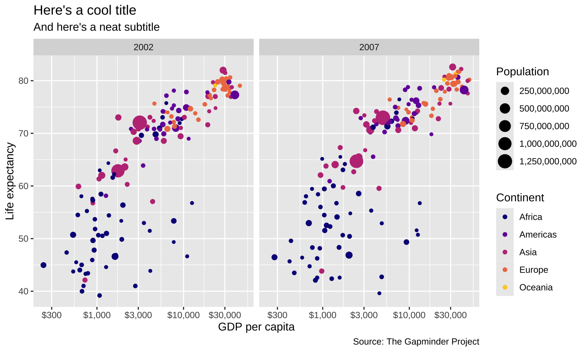
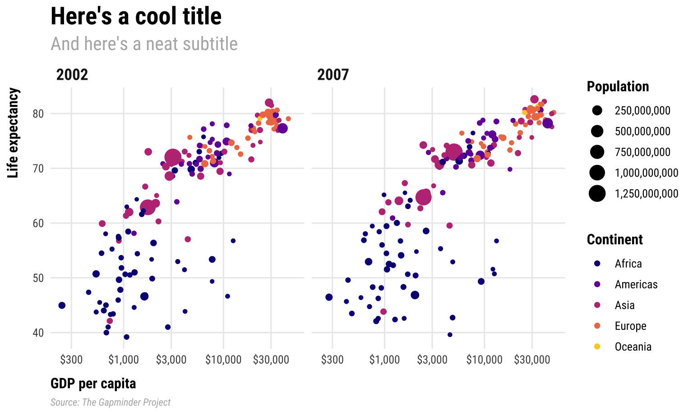
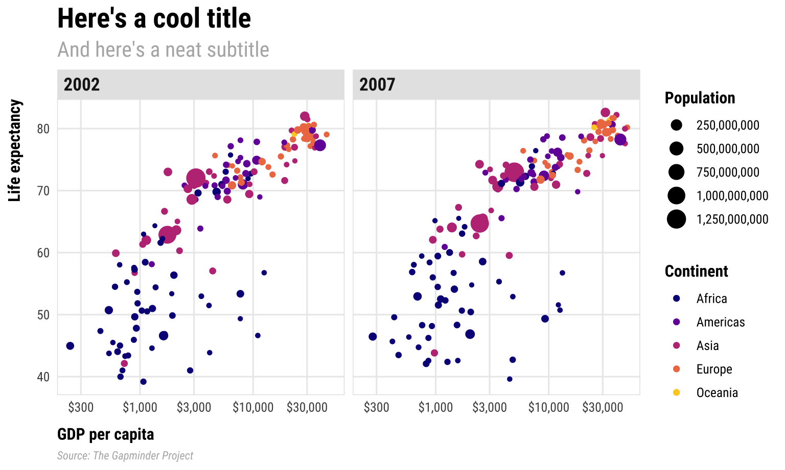
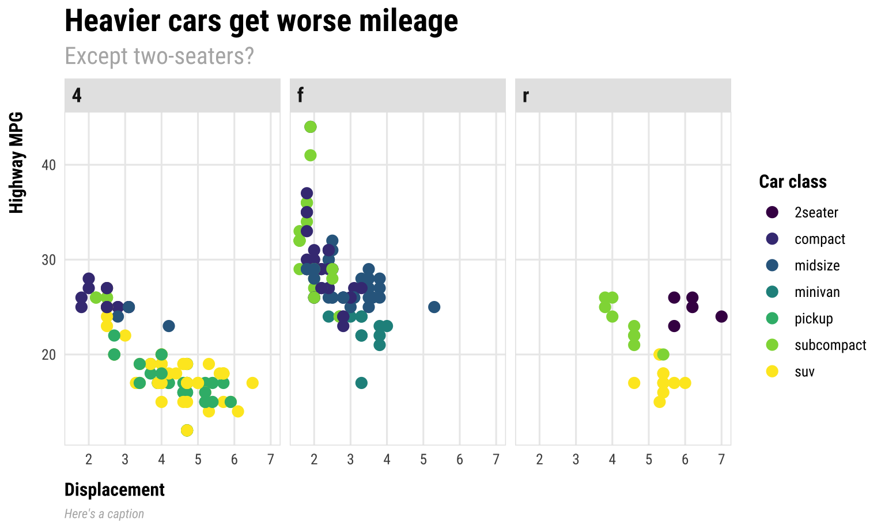

Code
remotes::install_github("timmarchand/ggthemeassist")
library(ggThemeAssist)Example for Thursday, May 14, 2026–Wednesday, May 20, 2026
The lesson for this week’s session is a fairly comprehensive introduction to using the theme() function in ggplot, and this page by Henry Wang is a good cheat sheet for remembering which theme elements are which on a plot—and I like this PDF cheatsheet by Clara Granell even better.
For your exercise, you’re going to create the world’s ugliest plot. For this example, we’ll use the principles of CRAP to make a great theme.
I’m going to build the theme semi-incrementally here. Instead of showing how the plot updates with each change in setting, I do most of the updates all at once, with tons of comments explaining what each line does. Importantly, I did not write this all at once. When you’re tinkering with themes, you generally start with something like theme_minimal() or theme_bw() and then gradually add new things to theme(), like modifying plot.title, then plot.subtitle, etc. It’s a very iterative process with lots of tinkering. Because of this, there is no live-coding video for this example—it would be incredibly long and boring. Instead, look through each of the lines and see what they’re doing.
For this example, I’m going to use the gapminder dataset that we’ve been using throughout this week. Instead of using the CSV file like we did before, we’ll load the data from the {gapminder} package. Once you run library(gapminder), you’ll automatically have access to a dataset named gapminder.
We’ll also use the Roboto Condensed font in the theme. The setup chunk at the top of this document loads it automatically via the {showtext} package, so no manual font installation is needed.
Before we dive into building a theme from scratch, let’s look at a tool that can help you explore theme elements interactively. {ggThemeAssist} provides a point-and-click interface for tweaking theme settings, and then generates the corresponding code for you — great for discovering what’s possible before you start writing theme code by hand.
Install it with:
To use it, first create a ggplot object, select its name in your script, then go to Addins → ggplot Theme Assistant. Here’s a simple plot to try it on:
library(tidyverse)
demo_plot <- ggplot(data = mpg,
mapping = aes(x = displ, y = hwy, color = class)) +
geom_point(size = 3) +
labs(x = "Displacement", y = "Highway MPG", color = "Car class",
title = "Heavier cars get worse mileage",
subtitle = "Except for two-seaters?",
caption = "Source: ggplot2::mpg")
demo_plotSelect demo_plot in your script and launch the addin. Once you’re happy with the result, the generated theme() code gets inserted directly into your script. Here’s a brief video showing the workflow:
When I’m creating a theme, I like to use a basic plot with everything that might show up, complete with a title, subtitle, caption, legend, facets, and other elements.
library(tidyverse) # For ggplot, dplyr, and friends
library(gapminder) # For gapminder data
library(scales) # For nice axis labels
gapminder_filtered <- gapminder |>
filter(year > 2000)
base_plot <- ggplot(data = gapminder_filtered,
mapping = aes(x = gdpPercap, y = lifeExp,
color = continent, size = pop)) +
geom_point() +
# Use dollars, and get rid of the cents part (i.e. $300 instead of $300.00)
scale_x_log10(labels = label_dollar(accuracy = 1)) +
# Format with commas
scale_size_continuous(labels = label_comma()) +
# Use viridis
scale_color_viridis_d(option = "plasma", end = 0.9) +
labs(x = "GDP per capita", y = "Life expectancy",
color = "Continent", size = "Population",
title = "Here's a cool title",
subtitle = "And here's a neat subtitle",
caption = "Source: The Gapminder Project") +
facet_wrap(vars(year))
base_plot
Now we have base_plot to work with. Here’s what it looks like with theme_minimal() applied to it:
That gets rid of the grey background and is a good start, but we can make lots of improvements. First let’s deal with the gridlines. There are too many. We can get rid of the minor gridlines by setting them to element_blank():
Next let’s add some typographic contrast. We’ll use Roboto Condensed Regular as the base font, which is already loaded via {showtext} in the setup chunk.
We’ll use the font as the base_family argument. Note how I make it bold with face and change the size with rel(). Instead of manually setting some arbitrary size, I use rel() to resize the text in relation to the base_size argument. Using rel(1.7) means 1.7 × base_size, or 20.4. That will rescale according to whatever base_size is—if I shrink it to base_size = 8, the title will scale down accordingly.
plot_with_good_typography <- base_plot +
theme_minimal(base_family = "Roboto Condensed", base_size = 12) +
theme(panel.grid.minor = element_blank(),
# Bold, bigger title
plot.title = element_text(face = "bold", size = rel(1.7)),
# Plain, slightly bigger subtitle that is grey
plot.subtitle = element_text(face = "plain", size = rel(1.3), color = "grey70"),
# Italic, smaller, grey caption that is left-aligned
plot.caption = element_text(face = "italic", size = rel(0.7),
color = "grey70", hjust = 0),
# Bold legend titles
legend.title = element_text(face = "bold"),
# Bold, slightly larger facet titles that are left-aligned for the sake of repetition
strip.text = element_text(face = "bold", size = rel(1.1), hjust = 0),
# Bold axis titles
axis.title = element_text(face = "bold"),
# Add some space above the x-axis title and make it left-aligned
axis.title.x = element_text(margin = margin(t = 10), hjust = 0),
# Add some space to the right of the y-axis title and make it top-aligned
axis.title.y = element_text(margin = margin(r = 10), hjust = 1))
plot_with_good_typography
Whoa. That gets us most of the way there! We have good contrast with the typography, with the strong bold and the lighter regular font (✓ contrast). Everything is aligned left (✓ alignment and ✓ repetition). By moving the axis titles a little bit away from the labels, we’ve enhanced proximity, since they were too close together (✓ proximity). We repeat grey in both the caption and the subtitle (✓ repetition).
The only thing I don’t like is that the 2002 facet label isn’t quite aligned with the title and subtitle. This is because the facet labels are in boxes along the top of each plot, and in some themes (like theme_grey() and theme_bw()) those facet labels have grey backgrounds. We can add a background, which will then be perfectly aligned with the title and subtitle.

🔪 💋! That looks great!
To save ourselves time in the future, we can store this whole thing as an object that we can then reuse on other plots:
my_pretty_theme <- theme_minimal(base_family = "Roboto Condensed", base_size = 12) +
theme(panel.grid.minor = element_blank(),
# Bold, bigger title
plot.title = element_text(face = "bold", size = rel(1.7)),
# Plain, slightly bigger subtitle that is grey
plot.subtitle = element_text(face = "plain", size = rel(1.3), color = "grey70"),
# Italic, smaller, grey caption that is left-aligned
plot.caption = element_text(face = "italic", size = rel(0.7),
color = "grey70", hjust = 0),
# Bold legend titles
legend.title = element_text(face = "bold"),
# Bold, slightly larger facet titles that are left-aligned for the sake of repetition
strip.text = element_text(face = "bold", size = rel(1.1), hjust = 0),
# Bold axis titles
axis.title = element_text(face = "bold"),
# Add some space above the x-axis title and make it left-aligned
axis.title.x = element_text(margin = margin(t = 10), hjust = 0),
# Add some space to the right of the y-axis title and make it top-aligned
axis.title.y = element_text(margin = margin(r = 10), hjust = 1),
# Add a light grey background to the facet titles, with no borders
strip.background = element_rect(fill = "grey90", color = NA),
# Add a thin grey border around all the plots to tie in the facet titles
panel.border = element_rect(color = "grey90", fill = NA))Now we can use it on any plot. Remember that first plot you made in your exercise from session 1 with the cars dataset? Let’s throw this theme on it! (only here the dataset is named mpg instead of cars; the mpg dataset is loaded invisibly whenever you load ggplot)
mpg_example <- ggplot(data = mpg,
mapping = aes(x = displ, y = hwy, color = class)) +
geom_point(size = 3) +
scale_color_viridis_d() +
facet_wrap(vars(drv)) +
labs(x = "Displacement", y = "Highway MPG", color = "Car class",
title = "Heavier cars get worse mileage",
subtitle = "Except two-seaters?",
caption = "Here's a caption") +
my_pretty_theme
mpg_example
Super neat!
This custom theme we just made is just one iteration of a theme. There are countless ways to tinker with a theme and have it meet the different CRAP principles. People have even published their own themes in different R packages. Check these out to see lots of different examples:
Check this blog post for examples of a bunch of others.
If we want to save these plots, we can use ggsave(). For that to work, we need to store the plot as an object, which I already did in the examples above:
We then feed our saved plot object to ggsave() and specify the filename and dimensions we want to use. If we’re using PNG, we don’t need to worry about any extra options. If we’re using PDF, we need to tell R to use the Cairo PDF writing engine instead of R’s normal one, since R’s normal one can’t deal with custom fonts.
# Add my_pretty_theme to the gapminder base_plot and save as an object
final_gapminder_plot <- base_plot +
my_pretty_theme
# Save as PNG and PDF
ggsave("fancy_gapminder.png", final_gapminder_plot,
width = 8, height = 5, units = "in")
ggsave("fancy_gapminder.pdf", final_gapminder_plot,
width = 8, height = 5, units = "in", device = cairo_pdf)
# Save the mpg plot as PNG and PDF
ggsave("fancy_mpg.png", mpg_example,
width = 8, height = 5, units = "in")
ggsave("fancy_mpg.pdf", mpg_example,
width = 8, height = 5, units = "in", device = cairo_pdf)---
title: "Themes"
date: "2026-05-14"
date_end: "2026-05-20"
---
```{r setup, include=FALSE}
knitr::opts_chunk$set(
fig.width = 8,
fig.height = 4.8,
fig.align = "center",
collapse = TRUE,
dev = "png"
)
set.seed(1234)
library(showtext)
font_add_google("Roboto Condensed", "Roboto Condensed")
showtext_auto()
```
The [lesson for this week's session](/lesson/05-lesson.qmd) is a fairly comprehensive introduction to using the `theme()` function in ggplot, and [this page by Henry Wang](https://henrywang.nl/ggplot2-theme-elements-demonstration/) is a good cheat sheet for remembering which theme elements are which on a plot—and I like [this PDF cheatsheet by Clara Granell](https://github.com/claragranell/ggplot2/blob/main/ggplot_theme_system_cheatsheet.pdf) even better.
For [your exercise](/assignment/05-exercise.qmd), you're going to create the world's ugliest plot. For this example, we'll use the principles of CRAP to make a great theme.
I'm going to build the theme semi-incrementally here. Instead of showing how the plot updates with each change in setting, I do most of the updates all at once, with tons of comments explaining what each line does. **Importantly**, I did *not* write this all at once. When you're tinkering with themes, you generally start with something like `theme_minimal()` or `theme_bw()` and then gradually add new things to `theme()`, like modifying `plot.title`, then `plot.subtitle`, etc. It's a very iterative process with lots of tinkering. Because of this, **there is no live-coding video for this example**—it would be incredibly long and boring. Instead, look through each of the lines and see what they're doing.
For this example, I'm going to use the `gapminder` dataset that we've been using throughout this week. Instead of using the CSV file like we did before, we'll load the data from the {gapminder} package. Once you run `library(gapminder)`, you'll automatically have access to a dataset named `gapminder`.
We'll also use the [Roboto Condensed font](https://fonts.google.com/specimen/Roboto+Condensed) in the theme. The setup chunk at the top of this document loads it automatically via the `{showtext}` package, so no manual font installation is needed.
## Bonus: {ggThemeAssist}
Before we dive into building a theme from scratch, let's look at a tool that can help you explore theme elements interactively. {ggThemeAssist} provides a point-and-click interface for tweaking theme settings, and then generates the corresponding code for you — great for discovering what's possible before you start writing theme code by hand.
Install it with:
```{r install-ggthemeassist, eval=FALSE}
remotes::install_github("timmarchand/ggthemeassist")
library(ggThemeAssist)
```
To use it, first create a ggplot object, select its name in your script, then go to **Addins → ggplot Theme Assistant**. Here's a simple plot to try it on:
```{r ggthemeassist-demo, eval = FALSE}
library(tidyverse)
demo_plot <- ggplot(data = mpg,
mapping = aes(x = displ, y = hwy, color = class)) +
geom_point(size = 3) +
labs(x = "Displacement", y = "Highway MPG", color = "Car class",
title = "Heavier cars get worse mileage",
subtitle = "Except for two-seaters?",
caption = "Source: ggplot2::mpg")
demo_plot
```
Select `demo_plot` in your script and launch the addin. Once you're happy with the result, the generated `theme()` code gets inserted directly into your script. Here's a brief video showing the workflow:
<div class="ratio ratio-16x9">
<iframe src="https://www.youtube.com/embed/9ldrTCUSReM" allow="accelerometer; autoplay; encrypted-media; gyroscope; picture-in-picture" allowfullscreen="" frameborder="0"></iframe>
</div>
## Basic plot
When I'm creating a theme, I like to use a basic plot with everything that might show up, complete with a title, subtitle, caption, legend, facets, and other elements.
```{r basic-plot, warning=FALSE, message=FALSE}
library(tidyverse) # For ggplot, dplyr, and friends
library(gapminder) # For gapminder data
library(scales) # For nice axis labels
gapminder_filtered <- gapminder |>
filter(year > 2000)
base_plot <- ggplot(data = gapminder_filtered,
mapping = aes(x = gdpPercap, y = lifeExp,
color = continent, size = pop)) +
geom_point() +
# Use dollars, and get rid of the cents part (i.e. $300 instead of $300.00)
scale_x_log10(labels = label_dollar(accuracy = 1)) +
# Format with commas
scale_size_continuous(labels = label_comma()) +
# Use viridis
scale_color_viridis_d(option = "plasma", end = 0.9) +
labs(x = "GDP per capita", y = "Life expectancy",
color = "Continent", size = "Population",
title = "Here's a cool title",
subtitle = "And here's a neat subtitle",
caption = "Source: The Gapminder Project") +
facet_wrap(vars(year))
base_plot
```
Now we have `base_plot` to work with. Here's what it looks like with `theme_minimal()` applied to it:
```{r base-minimal}
base_plot +
theme_minimal()
```
That gets rid of the grey background and is a good start, but we can make lots of improvements. First let's deal with the gridlines. There are too many. We can get rid of the minor gridlines by setting them to `element_blank()`:
```{r theme1}
base_plot +
theme_minimal() +
theme(panel.grid.minor = element_blank())
```
Next let's add some typographic contrast. We'll use Roboto Condensed Regular as the base font, which is already loaded via `{showtext}` in the setup chunk.
We'll use the font as the `base_family` argument. Note how I make it bold with `face` and change the size with `rel()`. Instead of manually setting some arbitrary size, I use `rel()` to resize the text in relation to the `base_size` argument. Using `rel(1.7)` means 1.7 × `base_size`, or 20.4. That will rescale according to whatever `base_size` is—if I shrink it to `base_size = 8`, the title will scale down accordingly.
```{r theme2}
plot_with_good_typography <- base_plot +
theme_minimal(base_family = "Roboto Condensed", base_size = 12) +
theme(panel.grid.minor = element_blank(),
# Bold, bigger title
plot.title = element_text(face = "bold", size = rel(1.7)),
# Plain, slightly bigger subtitle that is grey
plot.subtitle = element_text(face = "plain", size = rel(1.3), color = "grey70"),
# Italic, smaller, grey caption that is left-aligned
plot.caption = element_text(face = "italic", size = rel(0.7),
color = "grey70", hjust = 0),
# Bold legend titles
legend.title = element_text(face = "bold"),
# Bold, slightly larger facet titles that are left-aligned for the sake of repetition
strip.text = element_text(face = "bold", size = rel(1.1), hjust = 0),
# Bold axis titles
axis.title = element_text(face = "bold"),
# Add some space above the x-axis title and make it left-aligned
axis.title.x = element_text(margin = margin(t = 10), hjust = 0),
# Add some space to the right of the y-axis title and make it top-aligned
axis.title.y = element_text(margin = margin(r = 10), hjust = 1))
plot_with_good_typography
```
Whoa. That gets us most of the way there! We have good contrast with the typography, with the strong bold and the lighter regular font (**✓ contrast**). Everything is aligned left (**✓ alignment** and **✓ repetition**). By moving the axis titles a little bit away from the labels, we've enhanced proximity, since they were too close together (**✓ proximity**). We repeat grey in both the caption and the subtitle (**✓ repetition**).
The only thing I don't like is that the 2002 facet label isn't quite aligned with the title and subtitle. This is because the facet labels are in boxes along the top of each plot, and in some themes (like `theme_grey()` and `theme_bw()`) those facet labels have grey backgrounds. We can add a background, which will then be perfectly aligned with the title and subtitle.
```{r theme3}
plot_with_good_typography +
# Add a light grey background to the facet titles, with no borders
theme(strip.background = element_rect(fill = "grey90", color = NA),
# Add a thin grey border around all the plots to tie in the facet titles
panel.border = element_rect(color = "grey90", fill = NA))
```
`r emoji::emoji("chef")` `r emoji::emoji("kiss")`! That looks great!
To save ourselves time in the future, we can store this whole thing as an object that we can then reuse on other plots:
```{r theme-store}
my_pretty_theme <- theme_minimal(base_family = "Roboto Condensed", base_size = 12) +
theme(panel.grid.minor = element_blank(),
# Bold, bigger title
plot.title = element_text(face = "bold", size = rel(1.7)),
# Plain, slightly bigger subtitle that is grey
plot.subtitle = element_text(face = "plain", size = rel(1.3), color = "grey70"),
# Italic, smaller, grey caption that is left-aligned
plot.caption = element_text(face = "italic", size = rel(0.7),
color = "grey70", hjust = 0),
# Bold legend titles
legend.title = element_text(face = "bold"),
# Bold, slightly larger facet titles that are left-aligned for the sake of repetition
strip.text = element_text(face = "bold", size = rel(1.1), hjust = 0),
# Bold axis titles
axis.title = element_text(face = "bold"),
# Add some space above the x-axis title and make it left-aligned
axis.title.x = element_text(margin = margin(t = 10), hjust = 0),
# Add some space to the right of the y-axis title and make it top-aligned
axis.title.y = element_text(margin = margin(r = 10), hjust = 1),
# Add a light grey background to the facet titles, with no borders
strip.background = element_rect(fill = "grey90", color = NA),
# Add a thin grey border around all the plots to tie in the facet titles
panel.border = element_rect(color = "grey90", fill = NA))
```
Now we can use it on any plot. Remember that first plot you made in your exercise from session 1 with the `cars` dataset? Let's throw this theme on it! (only here the dataset is named `mpg` instead of `cars`; the `mpg` dataset is loaded invisibly whenever you load ggplot)
```{r mpg-example}
mpg_example <- ggplot(data = mpg,
mapping = aes(x = displ, y = hwy, color = class)) +
geom_point(size = 3) +
scale_color_viridis_d() +
facet_wrap(vars(drv)) +
labs(x = "Displacement", y = "Highway MPG", color = "Car class",
title = "Heavier cars get worse mileage",
subtitle = "Except two-seaters?",
caption = "Here's a caption") +
my_pretty_theme
mpg_example
```
Super neat!
## Nice pre-built themes
This custom theme we just made is just one iteration of a theme. There are countless ways to tinker with a theme and have it meet the different CRAP principles. People have even published their own themes in different R packages. Check these out to see lots of different examples:
- [{hrbrthemes}](https://github.com/hrbrmstr/hrbrthemes)
- [{ggthemes}](https://yutannihilation.github.io/allYourFigureAreBelongToUs/ggthemes/)
- [{ggthemr}](https://github.com/cttobin/ggthemr)
- [{ggtech}](https://github.com/ricardo-bion/ggtech)
- [{tvthemes}](https://ryo-n7.github.io/2019-05-16-introducing-tvthemes-package/)
- [{ggpomological}](https://www.garrickadenbuie.com/project/ggpomological/) (this one is incredible!)
Check [this blog post](https://rfortherestofus.com/2019/08/themes-to-improve-your-ggplot-figures/) for examples of a bunch of others.
## Saving plots
If we want to save these plots, we can use `ggsave()`. For that to work, we need to store the plot as an object, which I already did in the examples above:
```{r store-plot-example, eval=FALSE}
name_of_plot_object <- ggplot(...)
```
We then feed our saved plot object to `ggsave()` and specify the filename and dimensions we want to use. If we're using PNG, we don't need to worry about any extra options. If we're using PDF, [we need to tell R to use the Cairo PDF writing engine](https://www.andrewheiss.com/blog/2017/09/27/working-with-r-cairo-graphics-custom-fonts-and-ggplot/) instead of R's normal one, since R's normal one can't deal with custom fonts.
```{r save-plots, eval=FALSE}
# Add my_pretty_theme to the gapminder base_plot and save as an object
final_gapminder_plot <- base_plot +
my_pretty_theme
# Save as PNG and PDF
ggsave("fancy_gapminder.png", final_gapminder_plot,
width = 8, height = 5, units = "in")
ggsave("fancy_gapminder.pdf", final_gapminder_plot,
width = 8, height = 5, units = "in", device = cairo_pdf)
# Save the mpg plot as PNG and PDF
ggsave("fancy_mpg.png", mpg_example,
width = 8, height = 5, units = "in")
ggsave("fancy_mpg.pdf", mpg_example,
width = 8, height = 5, units = "in", device = cairo_pdf)
```